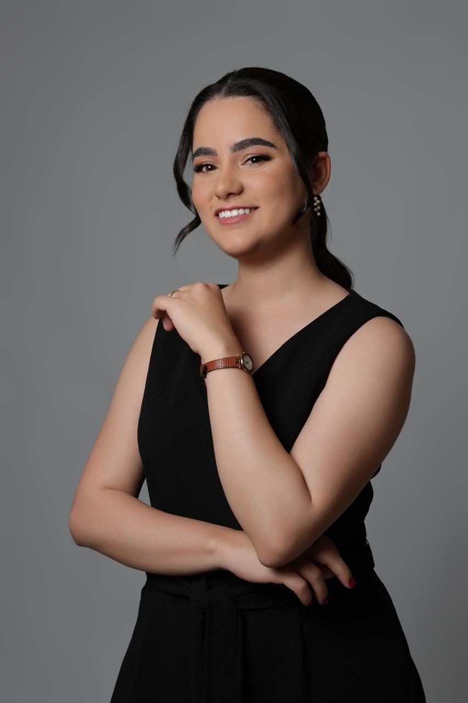

Sabrina Santos
Cirurgiã-dentista com atuação em dor orofacial, DTM, odontologia do sono e endodontia.

Odontologia que une técnica e acolhimento
Graduada em Odontologia pelo Centro Universitário Newton Paiva, escolhi seguir uma formação continuada e diversificada: patologia oral e maxilofacial, saúde pública, DTM e dor orofacial, e endodontia mecanizada.
Essa base permite enxergar o paciente de forma ampla, do diagnóstico das lesões da boca ao cuidado com dores que muitas vezes passam anos sem explicação.
Formação
Graduação em Odontologia – Centro Universitário Newton Paiva (CUNP)
Especializações
DTM, Dor Orofacial e Odontologia do Sono (Instituto Israelita de Ensino e Pesquisa Albert Einstein); Patologia Oral e Maxilofacial (FAMEESP); Saúde Pública (UniCesumar)
Extensão
Endodontia mecanizada; Saúde coletiva e educação em saúde bucal
Como eu cuido dos meus pacientes
Escuta primeiro
Cada atendimento começa com uma conversa atenta sobre sua queixa, sua rotina e suas expectativas.
Diagnóstico criterioso
Tratamentos baseados em evidências e em exames adequados, sem procedimentos desnecessários.
Acompanhamento próximo
O cuidado não termina na consulta: orientação clara e acompanhamento até o resultado esperado.
Vamos cuidar do seu sorriso?
Conte o que você está sentindo ou o que deseja tratar. Respondo com atenção e sem pressa.